We study posterior sampling for inverse problems in discrete state spaces using discrete diffusion models as generative priors. While continuous diffusion models have become widely used for inverse problems, their discrete counterparts remain comparatively underexplored. Existing discrete posterior samplers often rely on continuous relaxations of discrete variables, Gibbs-style updates, or mechanisms specialized to particular corruption processes, which can limit scalability or generality. We propose \(\Delta\text{LPS}\), a Discrete Langevin-Inspired Posterior Sampler that uses gradient information to identify promising discrete moves without leaving the discrete state space. The resulting approach enables efficient parallel updates across all token dimensions and is agnostic to the training paradigm of the discrete diffusion prior, including masked and uniform-state diffusion. We evaluate our method on image restoration tasks across MNIST, CIFAR, and FFHQ, as well as spatial mapping, covering linear, nonlinear, and blind inverse problems. Across these settings, we improve over recent discrete diffusion posterior samplers and are competitive with strong continuous diffusion-based inverse solvers. Our results suggest that fully discrete, gradient-informed posterior samplers offer a scalable and general path toward solving inverse problems over discrete representations.
\(\Delta\text{LPS}\): Discrete Langevin-Inspired Posterior Sampling
University of Illinois Urbana-Champaign
*Equal contribution. Shared author order determined by the toss of a fair coin.
(TL;DR) We propose \(\Delta\text{LPS}\), a training-free discrete Langevin-inspired posterior sampler that operates entirely in the discrete state space and enables efficient parallel updates across all token dimensions, working with any discrete diffusion prior.
Abstract
Contributions
- Fully discrete posterior sampling. We introduce \(\Delta\text{LPS}\), a training-free discrete Langevin-inspired posterior sampler that keeps every iterate in the discrete state space, avoiding soft-token optimization and projection back to discrete tokens.
- Efficient parallel updates. We use gradients only to construct informed transition probabilities between valid discrete states. The resulting proposal factorizes across coordinates, enabling all token dimensions to be updated in parallel rather than through sequential Gibbs-style updates.
- Prior-agnostic posterior sampler. Our method only requires predictive probabilities over categorical states, making it applicable to masked, uniform-state, and other discrete diffusion priors.
Where can \(\Delta\text{LPS}\) be useful?
\(\Delta\text{LPS}\) is a training-free posterior sampler, i.e., it requires no additional training or fine-tuning beyond the discrete diffusion prior itself. Our method can be applied to many inverse problems where the ground truth lives in, or can be tokenized into, a discrete state space. We show results across various linear and nonlinear inverse problems on FFHQ (HDR reconstruction, super-resolution, deblurring, inpainting), binary operators like XOR/AND on MNIST, inpainting regions on CIFAR, and blind inverse problems in spatial mapping, with no task-specific modifications.
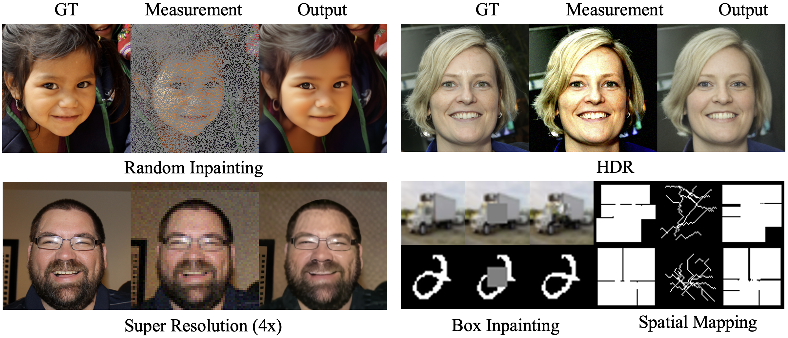
How does \(\Delta\text{LPS}\) work?
\(\Delta\text{LPS}\) is a discrete Langevin-inspired posterior sampler that uses gradient information to construct informed transition probabilities between valid discrete states. By operating entirely in the discrete state space, our method avoids the pitfalls of soft-token optimization and projection back to discrete tokens. The resulting proposal factorizes across coordinates, enabling efficient parallel updates across all token dimensions. Moreover, \(\Delta\text{LPS}\) is agnostic to the training paradigm of the discrete diffusion prior, making it broadly applicable across domains and prior types. Our algorithm overview is shown below.
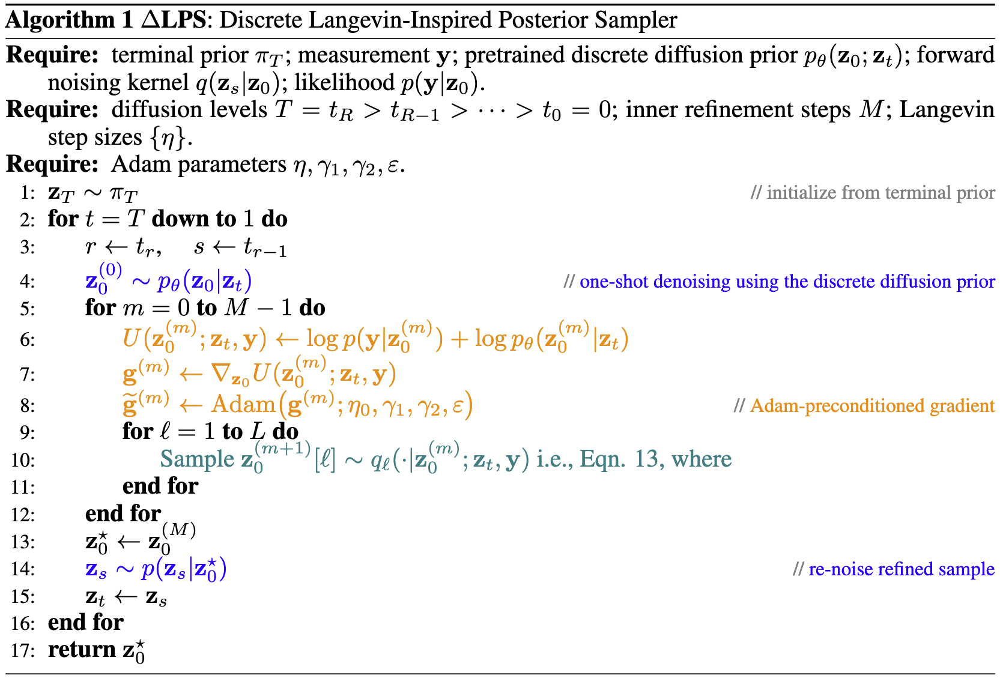
How does \(\Delta\text{LPS}\) compare to existing methods?
We compare \(\Delta\text{LPS}\) against continuous diffusion-based baselines (DPS, PSLD) and the discrete baseline APS across four FFHQ tasks: HDR reconstruction, \(4\times\) super-resolution, Gaussian deblurring, and random inpainting. Across all tasks, our reconstructions are visually comparable to the baselines, preserving facial details and perceptual quality even under severe corruptions, entirely operating in the discrete space.
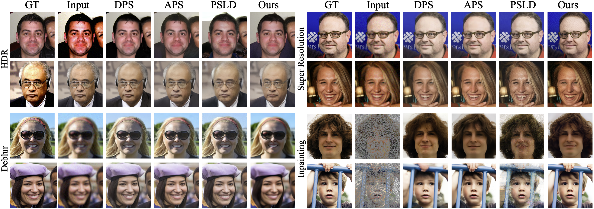
Task-by-task results on FFHQ
Below we show individual task breakdowns on more qualitative examples. Each row contains the ground truth, the corrupted measurement, and the \(\Delta\text{LPS}\) reconstruction.
HDR Reconstruction
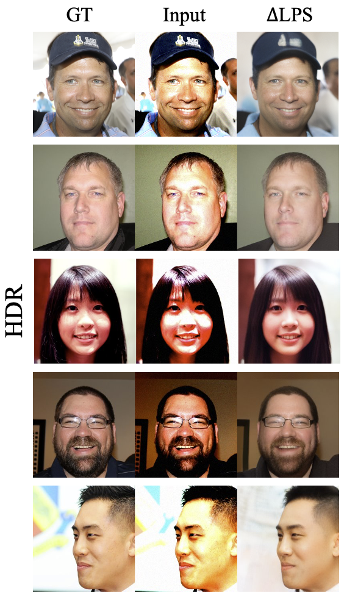
\(4\times\) Super-Resolution
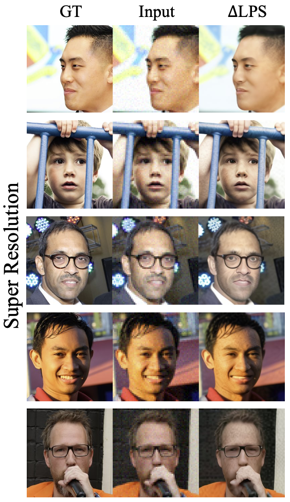
Gaussian Deblurring
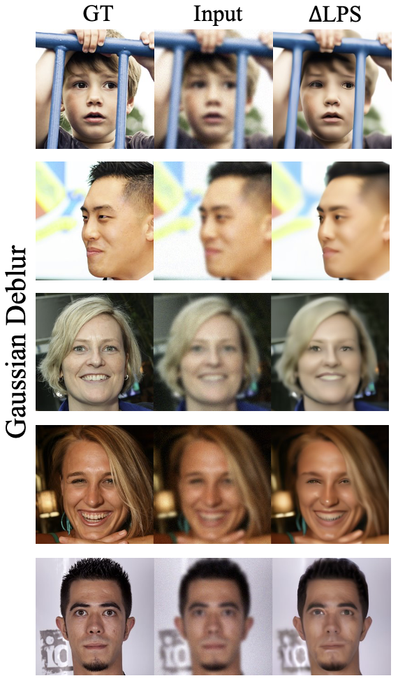
Random Inpainting
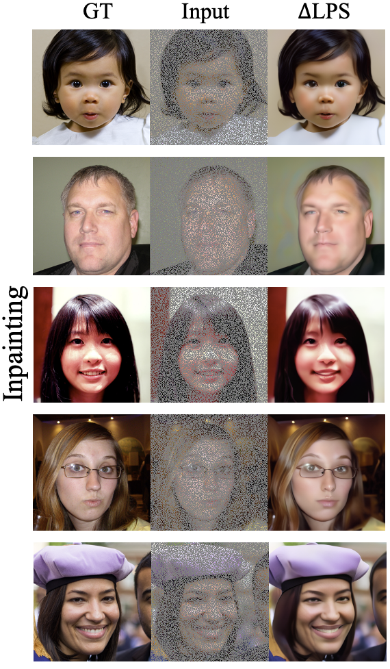
Motion Deblurring
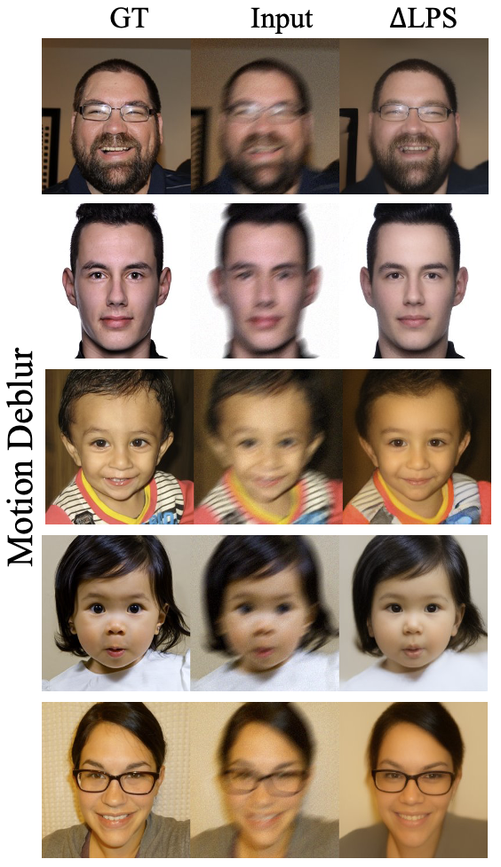
Quantitative results on FFHQ
We report PSNR (dB, higher is better) and LPIPS (lower is better) across five inverse problems, comparing \(\Delta\text{LPS}\) against various continuous baselines and discrete baseline. \(\Delta\text{LPS}\) outperforms all the discrete baselines in LPIPS across all the 5 tasks. In terms of PNSR, our results are on par with other baselines.
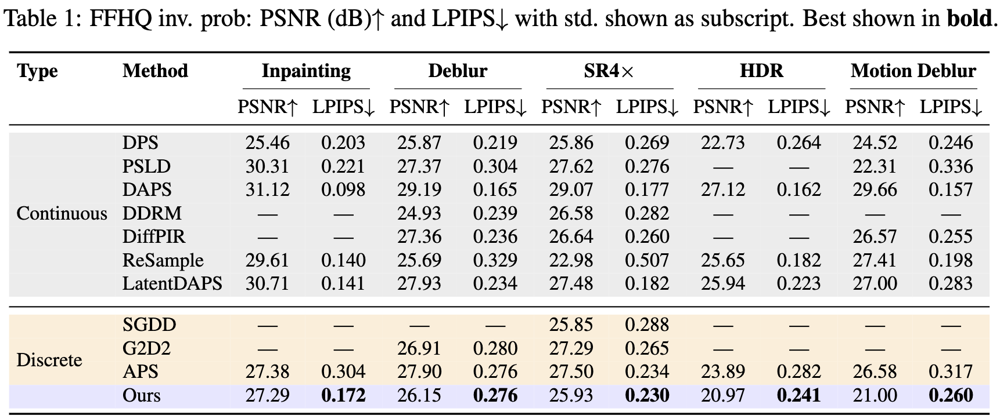
What about tasks beyond FFHQ?
We also evaluate on MNIST and CIFAR-10 on various tasks such as binary operators (XOR/AND), inpainting missing regions, and other corruptions across different difficulty levels. To demonstrate that \(\Delta\text{LPS}\) is prior-agnostic, we report results using both the MDLM and DUO priors.
MNIST
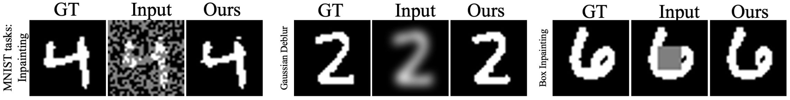
We report token accuracy (%) and PSNR (dB) across four operators (Inpainting, Box, XOR, AND) at easy/medium/hard difficulty. Both MDLM and DUO priors consistently match or surpass SGDD and G2D2. The advantage widens as difficulty increases, showing robustness to ill-posedness.
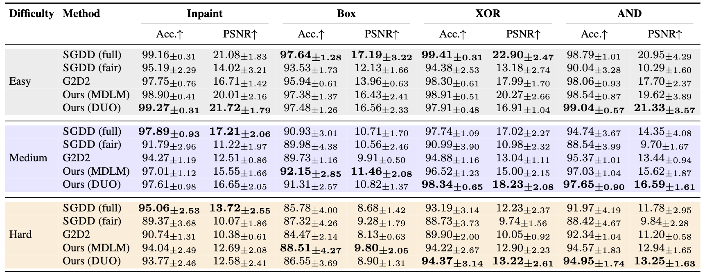
CIFAR-10
On CIFAR-10, we report PSNR (dB) and SSIM across inpainting and box-inpainting at three difficulty levels. \(\Delta\text{LPS}\) (DUO) leads across both tasks at all difficulty levels.
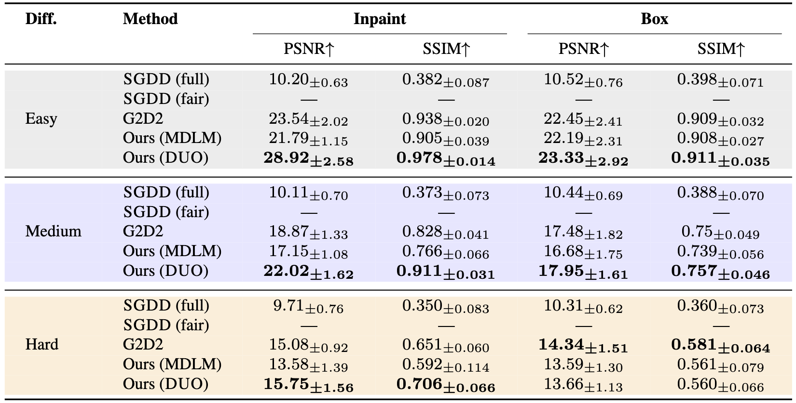
Does \(\Delta\text{LPS}\) work on blind inverse problems?
Yes. We evaluate on inferring the spatial map of an indoor environment from simulated human walking trajectories, where the forward measurement operator is only partially known (the user roughly follows the shortest path between two points). We achieve this by replacing the likelihood-gradient term in the posterior potential with a learned contrastive surrogate. The discrete Langevin proposal and parallel categorical update remain identical to the standard setting.
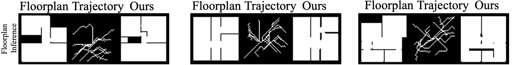
We report F1 and IoU for sparse and moderate trajectory density regimes, comparing against continuous baselines (DPS+path planner variants, DiffPIR, DMPlug, CFG) and CoGuide. \(\Delta\text{LPS}\) outperforms all continuous baselines in the sparse regime and matches CoGuide in the moderate regime.
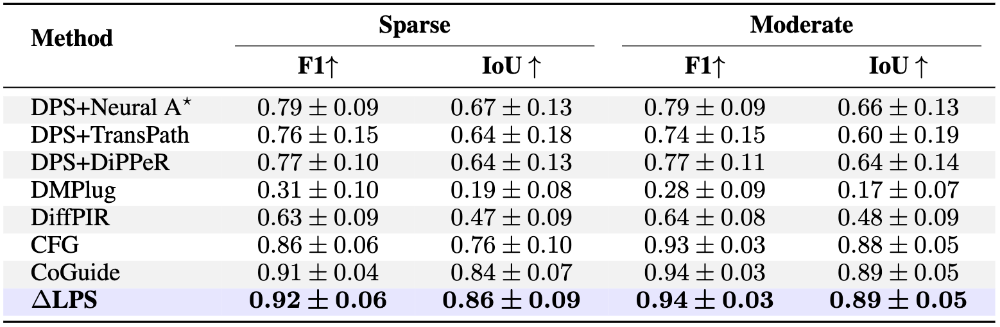